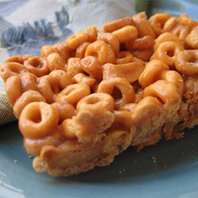

Recipe 3
Best Peanut Butter Cookies Ever

Ingredients
- 1/2 cup white sugar
- 1/2 cup white sugar
- 1/2 cup white sugar
- 3 cups toasted oat cereal
- 1 cup salted peanuts (optional)
Details
- Grease a 9x13 inch pan. In a large saucepan over medium heat, stir together the sugar and honey. Bring to a boil, then remove from heat and stir in the peanut butter until well blended. Stir in the cereal and if desired, stir in the salted peanuts. Press into the prepared pan. Allow to cool until firm, then cut into bars.